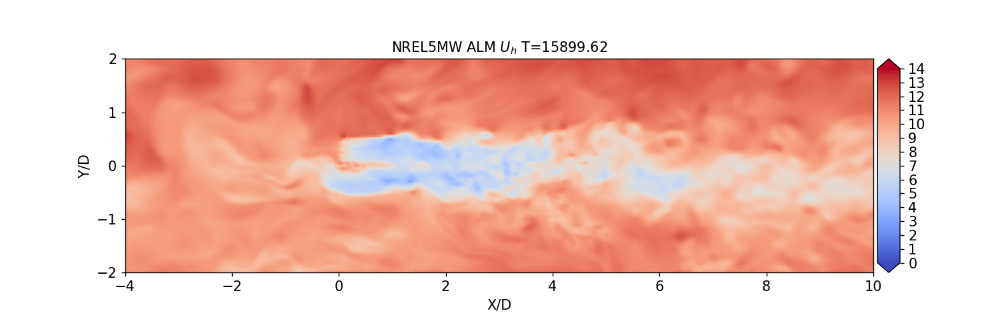

Actuator line models
Flexible NREL 5MW: Actuator line simulation of the NREL5MW reference turbine, coupled to the OpenFAST BeamDyn aeroelastic solver and ROSCO turbine controller
Rigid NREL 5MW: Actuator line simulation of the NREL5MW reference turbine, with rigid blades and fixed turbine control.